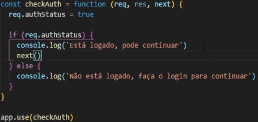

Express
O que é o Express ?
Express é um framework para NodeJS utilizado no BackEnd. Ele serve para criarmos aplicações WEB, tanto estáticas quanto dinâmicas com BD, Autenticações, etc. Ele acaba dominando o mercado de NODEJS, onde iremos aprender a criar rotas, aprender sobre arquiteturas (MVC), separar o front do back (API'S), entre diversas outras utilidades. É um framework leve e relativamente de ser utilizado. O Express torna a criação de apps muito mais simplificadas do que utilizando os Core Modules, pois uma série de coisas que criamos na mão antes, aqui é criado "automaticamente". Para instalar o express em um projeto, primeiro utilizamos o comando npm init - y e em seguida instalar o pacote do Express npm install express.
Rotas
Rota é um conceito super importante e presente em qualquer aplicação WEB. Rotas são básicamente os caminhos, as URL's que acessamos. Se acessarmos um site www.teste.com/produtos, esse /produtos é uma rota do nosso site. Vale ressaltar que uma url sem a barra, também é uma rota, a HOME, que dependendo do projeto, já executa alguma coisa. Rotas estão sempre ligadas a alguma funcionalidade da nossa aplicação. Quando acessamos alguma rota podemos acessar várias lógicas, como nesse exemplo acima, carregar a lista de produtos vindas do banco de dados. Em resumo, rotas são uma ponte entre o usuário e a lógica da aplicação. Uma rota não necessáriamente irá fazer uma coisa apenas, dependendo do seu verbo (Put,Delete,Remove,Update), pode fazer até 04 coisas, que é o famoso CRUD.
Setup Inicial
Antes de startarmos o Express, vale ressaltar mais uma vez que a WEB funciona com requisicoes e respostas. REQ é onde o usuário envia os dados de um formulário por exemplo para o servidor. E na RES é quando o servidor envia uma resposta para o usuário. Relembrando isso, podemos iniciar o express. O setup inicial do express é simples, mas precisamos saber alguns passos.
- Importar o Express e Invocá-lo
- Definir uma porta base para a aplicação
- Criar uma rota (URL que será acessada)
- Executar o método listen na porta especificada.
Abaixo segue um exemplo simples do Express funcionando o passo a passo citado acima.
Renderizando HTML
No exemplo acima, ao acessarmos a rota desejada ela nos responde apenas uma mensagem de texto, no caso 'Olá Mundo', que acaba sendo algo pouco útil no dia a dia. Dando continuidade, aqui aprenderemos a renderizar HTML como resposta usando o Express. Para isso utilizaremos o método SendFile, fazendo com que o arquivo seja renderizado no navegador. Para isso precisamos acessar o arquivo por meio do diretório base, e isso requer o módulo PATH.
Por padrão colocamos nossos arquivos HTML em uma pasta chamada TEMPLATES. Utilizando o método path, pegamos nosso diretório atual (__dirname), e juntamos com o da pasta desejada (templates), assim teremos a localização precisa de onde estará nossos arquivos HTML. Em seguida basta enviarmos. Exemplo abaixo:

Nesse exemplo contamos com a ajuda do PATH, porém futuramente aprenderemos outra forma mais simples de aplicar essa sintaxe.
Problemas de Atualização
Quando começamos a trabalhar com Express, podemos reparar que a cada atualização feita em nosso projeto precisamos parar o servidor (ctrl + c), e iniciar denovo para que as atualizações sejam vistas. Para solucionar isso contaremos com o módulo Nodemon, que a cada vez que o arquivo é salvo ele reinicia o projeto de forma automática, facilitando consideravelmente o workflow com Express. Para isso, salvamos ele como dependência de desenvolvimento, e acaba sendo uma boa prática para praticamente todos os projetos utilizando node. Para isso, utilziar o comando npm install --save-dev nodemon.
Após instalado, nós não podemos mais iniciar o projeto com o comando node index.js por exemplo, pois ele não estará utilizando o nodemon, e sim startar pelo nodemon. Para isso, é de boa prática irmos nos scripts do NPM dentro da pasta packaged.json, e colocar o nodemon junto ao comando start, para que sempre que dermos um npm start, ele já abra com o nodemon automáticamente. Exemplo abaixo. Ou voce pode simplesmente startar o projeto com o comando nodemon index.js.
MiddleWares
É mais um conceito que junto as rotas, estarão presente o tempo inteior quando trabalhamos com NodeJS. Middlewares são códigos que podem ser executos no meio/entre alguma ação e outra. Um exemplo prático é verificar se o usuário está logado. Por exemplo, um usuário tenta acessar uma rota em específico na qual apenas usuários autênticados possuem acesso. Nesse momento colocamos um middleware(algo que será executado entre a req do usuário e a res) e aqui se vermos que ele está logado prossegue e se não tiver, vá embora.
O método que nos da acesso a utilizar middlewares no express é o Use. Futuramente iremos aprender a utilizar os middlawares para rotas individualmente, o que trará mais sentido, pois na maioria das vezes iremos querer ver se o usuário está logado por exemplo em apenas algumas das rotas e em outras não, mas fica para o futuro. Abaixo segue um exemplo de um middleware simples funcionando para toda a aplicação:
Vale ressaltar que os middlewares sempre precisarão utilizar o método NEXT como mostrado acima, para assim que ele realizar sua função seja ela qual for, ele redirecionar para o next(Seuginte).
Parâmetros via URL.
Ao falarmos de requisições, elas podem enviar dados que podem vir básicamente pelo método GET ou pelo método POST. Devido a isso, podemos resgatar os parâmetros da URL por meio do REQ. Acessamos req.params.nome onde o nome deve ser o que está definido na URL do Express. Dessa forma por exemplo, fica dessa forma: /users:id por exemplo. Neste caso , estaríamos buscando o usuário no banco de dados pelo ID.
No exemplo abaixo mostramos uma rota que recebe um ID por parâmetro da URL e atribuimos esse id para uma variável. Em seguida, poderemos fazer qualquer coisa com essa informação como por exemplo uma consulta no banco de dados onde ele irá retornar o usuário com o id em questão.
Parâmetros via POST
Post é quando enviamos algo através de um usuário, geralmente na intenção de inserir informações em algum banco de dados. Para enviar os dados é necessário criar um form e enviar os dados via POST. No express é necessário colocar alguns midwares como o express.json, para ler os dados do body. E também uma rota qeu vai receber estes dados, utilizando o método post do express. Básicamente o fluxo é : O usuário preenche o form e envia. O servidor(Express), recebe a solicitação para a rota desejada, o middleware entra no meio e trata os dados e em seguida redireciona para a rota para enfim realizar a ação necessária.
Quando recebemos os dados via POST,
Módulos de Rotas:
É possível unir várias rotas em um módulo, isso vai deixar nosso código mais organizado. Muitas vezes iremos ter diversas rotas para diversas entidades, como usuário, produtos, compras, e isso acaba deixando a aplicação bagunçada e ilegível. Para isso normalmente é criado uma pasta para cada entidade em comum, como users por exemplo. Dentro da pasta User criamos um arquivo index.js onde criaremos as rotas dos users. Para isso vamos utilizar um novo objeto chamado Router. Depois precisamos exporta-lo e importa-lo no arquivo principal.
No arquivo index dentro da pasta Router, fica assim:
Lembrar que no final precisa exportar module.exports = router
E dentro da aplicação principal, é preciso importar esse Router exportado:
falta fazer
Css com Express
Para inserir CSS nas páginas e arquivos estáticas vamos precisar de um middleware, que é o express.static. Precisamos colocar um diretório base, que normalmente é o public e em seguida criar os estáticos a partir desta pasta. No html podemos acessar o caminho relativo após a pasta estar definida e pronto. Linha para colocar no App principal:
Pag 404
Em todo projeto é necessário criar uma página 404 em caso de o usuário digitar um URL não existente ou qualqeur outro tipo de erro. Ela é usada quando o usuário tenta logar em uma página não encontrada. Basta criar um novo middleware abaixo de todas as rotas, que responde com este status, e enviar um arquivo de template diferente a esta página. Veremos na prática: